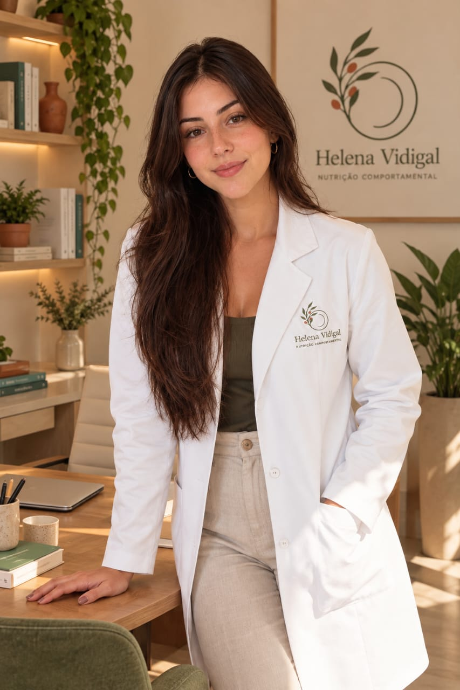

Ciência com acolhimento.
Sou Helena, nutricionista de Osasco. Acredito que comer bem é uma habilidade que se aprende, não um castigo.

Minha trajetória
- Nutrição na USP Faculdade de Saúde Pública, Universidade de São Paulo.
- Monitoria em Nutrição Clínica Dois anos apoiando turmas e atendimentos.
- Iniciação científica Bolsista, com resumo apresentado em congresso.
- Estágios Ambulatório de nutrição e clínica de nutrição esportiva.
- TCC premiado Melhor TCC, sobre adesão alimentar em jovens adultos.
- Aluna de maior destaque Láurea acadêmica na formatura.
- Hoje Pós em Nutrição Comportamental e cursos em nutrição esportiva e comer intuitivo.
Conheça o consultório
Sala no 27º andar, com vista para a cidade, em Osasco. Também atendo online.